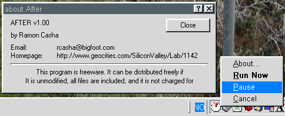
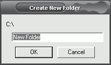

Graphically design your family tree and generate web pages in a snap. This easy- to-use program approaches family tree making from the user's point of view.
| Name: Control Panel Control | OS: Win9x/Me/2k/XP |
| Beschreibung: Control Panel Control ermöglicht es schnell und einfach direkt ins Startmenü oder auf der Arbeitsoberfläche Zugriffspunkte zu Systemsteuerung und den Druckern zu erstellen. | |
| Link zur Heimatseite: http://tech.simplenet.com/ | |
| Direkt herunterladen: Control Panel Control 0.2.0 | |
| Name: Win-Res-Q | OS: Win9x/Me/2k/XP |
| Beschreibung: Win-Res-Q ist ein kleines Werkzeug um versteckte Fenster oder nach einem Explorer-Absturtz nicht mehr sichtbare Fenster (wieder) in den Vordergrund zu holen. | |
| Link zur Heimatseite: http://magnetiq.com/win-res-q/ | |
| Direkt herunterladen: Win-Res-Q | |
| Name: TurboNavigator | OS: Win9x/Me/2k/XP |
| Beschreibung: TurboNavigator ist ein Dateimanager im Stile vom Norton Commander und Windows Commander (jetzt Total Commander). Er ermöglicht auch Baumstrukturen gleichzeitig auf beiden Seiten. TurboNavigator ist "Freeware". Version 1.47 scheint unter Windows NT/2k/XP einiges Probleme zu haben, daher habe ich hier auch die Version 1.46 zum Herunterladen bereitgestellt. Die Version 1.471 wurde in der Newgroup "alt.comp.freeware" vom Autor vorgestellt und soll seine letzten Änderungen enthalten. | |
| Link zur Heimatseite: TurboNavigator Die Heimatseite scheint nicht mehr aktiv zu sein. | |
| Direkt herunterladen: TurboNavigator Version 1.46, Version 1.47, Version 1.471 | |
| Name: More Properties | OS: Win9x/Me |
| Beschreibung: More Properties ermöglicht es einige Einstellungen unter Windows zu verändern. Hierzu gehört auch das Ändern von Systemikonen. | |
| Link zur Heimatseite: Imaginary Software | |
| Direkt herunterladen: More Properties | |
| Name: Sheep Screenmate | OS: Win3.1x/Win9x/Me/2k/XP |
| Beschreibung: Sheep Screenmate ist ein kleines wolliges Schaf, daß über den Bildschirm läuft und zur Unterhaltung gedacht ist. Stammt noch aus der 16bit-Zeit. | |
| Link zur Heimatseite: keiner | |
| Direkt herunterladen: Sheep | |
|
|
OS: Win9x/Me/2k/XP |
|
Beschreibung: Great Family Version 1.1 ist ein fantastisches
Genealogieprogramm zum erstellen von Familienstammbäumen.
Graphically design your family tree and generate web pages in a snap. This easy- to-use program approaches family tree making from the user's point of view. |
|
| Link zur Heimatseite: Great Family. | |
| Direkt herunterladen: GreatFamily v1.1 (Build 3) ist Freeware. Seit Version 2 ist GreatFamily nicht mehr frei! | |
| Name: WhatFormat | OS: Win9x/Me/2k/XP |
|
Beschreibung: WhatFormat v1.3 [32k] FREE W9x_NT4
What is it: It's not always possible to see from a filename's extension what actual format is used. Sometimes the same extension is used for different formats, one extension can be used for different versions or often a file simply has a wrong extension. The first bytes of a file may contain information of what format is used. WhatFormat is a file analyser that looks at these bytes for signatures (magic numbers) and makes a guess of the format this file may have. |
|
| Link zur Heimatseite: http://www.jozy.nl/whatfmt.html | |
| Direkt herunterladen: WhatFormat v1.3 [32k] FREE W9x_NT4 | |
| Name: MAX's HTML Beauty++ ME | OS: Win9x/Me/2k/XP |
| Beschreibung: MAX's HTML Beauty++ ME ist ein HTML-Editor der besseren Klasse. In seiner Ausstattung und seinem Erscheinungsbild ist er auf dem Niveau von HTML Studio. Die hier herunterzuladende Version ist ein Prerelease von 2001, ist stabil und schein keine Kinderkrankkeiten mehr zu haben. Plugins zur Erweiterung stehen wohl nicht zur Verfügung und die Weiterentwicklung ist anscheinend auch gestoppt worden. | |
| Link zur Heimatseite: http://www.htmlbeauty.com/. Alter Link: http://www.max.co.yu/htmlbeauty/ | |
| Direkt herunterladen: MAX's HTML Beauty++ ME Version 1.5 build 3700 | |
| Name: Rain-Waterfall | OS: Win9x/Me |
| Beschreibung: Rain und Waterfall sind beide kleine Programme die das HLT Kommande benutzen um Teile der CPU still zu legen, so daß sie keine Hitze produzieren während sie nicht benutzt werden. | |
| Link zur Heimatseite: keiner | |
| Direkt herunterladen: Rain und Waterfall | |
| Name: ChemWeb | OS: Win9x/Me/2k/XP |
| Beschreibung: ChemWeb (SoftShell) ist ein altes Programm, daß ehemals von BioRad als "Freeware" verteilt wurde. Es ermöglicht das Zeichnen von chemischen Strukturen in 2D. | |
| Link zur Heimatseite: keiner | |
| Direkt herunterladen: ChemWeb / SoftShell | |
| Name: After | OS: Win9x/Me/2k/XP |
|
Beschreibung: After ermöglicht es ein anderes Programm nach (after)
einem bestimmten Zeitraum zu starten. Gedacht ist das Programm eigentlich
für den Systemstart unter Windows 9x. An Stelle der direkten
Verknüpfungen zu den Programmen, die der Benutzer beim Systemstart
automatisch gestartet haben möchte, werden im StartUp Menü
Verknüpfungen mit unterscheidlichen Zeitangaben zu "After" erstellt. Nun
werden die Programme nicht mehr alle gleichzeitig gestartet, was die
Systembelastung erniedrigt und den Startvorgang beschleunigt.
Gegenüber anderen Programmen, z.B. Delayer, besteht die Möglichkeit den verzögerten Start auszusetzen oder sofort durchzuführen. So erscheint das Progamm nach Rechtsklick der Programmikone.  |
|
|
Link zur Heimatseite: keiner
Die im Programm angegebene Netzseite ist nicht mehr aktiv. |
|
| Direkt herunterladen: After | |
| Name: Subfolder | OS: Win9x/Me/2k/XP |
|  Beschreibung:Subfolder ermöglicht es im Windows Explorer direkte Unterverzeichnisse (Subfolder) zu erstellen. Nach einem Rechts-Click auf ein Verzeichnis, auch in der Baumstruktur, erscheint im Pop-Up-Menü die Option "Subfolder". | |
| Link zur Heimatseite: keiner | |
| Direkt herunterladen: Subfolder | |